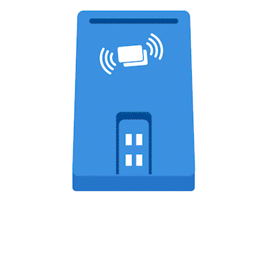

<app-aio-header></app-aio-header>
<app-aio-back-and-stepper [currentStep]="2"></app-aio-back-and-stepper>

<section>
  <div class="container text-center">
    <ng-container *ngIf="showFingerGif">
      <div>
        <h5>Quý khách vui lòng đặt CCCD và vân tay lên thiết bị scan</h5>
      </div>
      <div class="pt-4">
        
      </div>
    </ng-container>
    <div class="mt-4">
      <button (click)="next()" class="btn btn-primary">Tiếp tục</button>
    </div>
    <!-- <ng-container *ngIf="!showFingerGif">
      <div class="pt-4">
        
      </div>
    </ng-container> -->
    <!-- <div *ngIf="!fpResponse.verifyResponse" class="pt-4">
      <div class="spinner-border" role="status">
        <span class="sr-only">Loading...</span>
      </div>
    </div>
    <div *ngIf="fpResponse.verifyResponse">
      
      <div *ngIf="fpResponse.verifyResponse.success">
        {{ fpResponse.icaoResponse | json }}
      </div>
      <div *ngIf="!fpResponse.verifyResponse.success">
        <div class="text-danger">
          {{ fpResponse.verifyResponse.message }}
        </div>
        <button class="btn btn-warning mx-2" (click)="recallMkFingerPrint()">
          Làm lại
        </button>
      </div>
    </div>

    <div class="mt-4">
      <button
        routerLink="/aio/shared/collect-card-id"
        class="btn btn-primary mx-2"
      >
        Tiếp tục
      </button>
    </div> -->
  </div>
</section>
